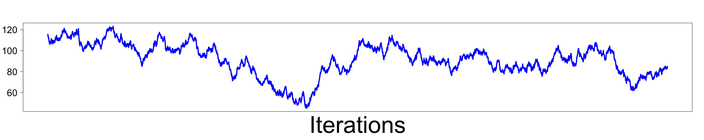
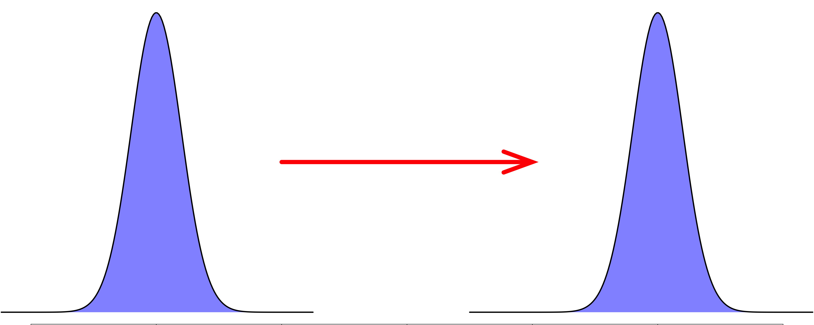
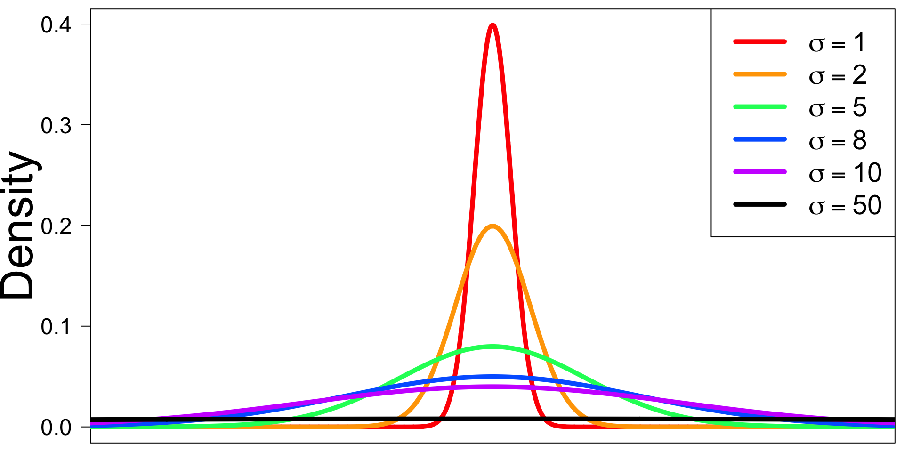
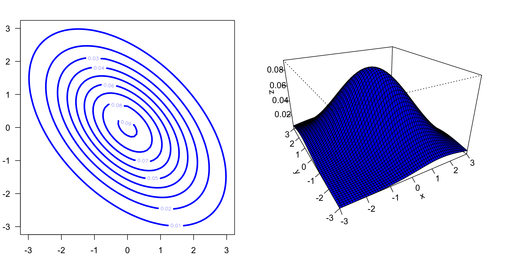

Convergence trick
2026-06-03
Playing with the Gaussian distribution
When estimating regression parameters, the Gaussian distribution is commonly used. Often what we need to do is figure out the mean and/or the variance of the Gaussian distribution that best fit the data given a particular model structure.
However, for technical reasons, it is sometimes (actually, more often than we would care to advertize broadly !) very difficult to reach convergence for a particular parameter. Visually, a trace plot would look like this

Playing with the Gaussian distribution
Even if you run the model for many, many (many !) iterations, it never seems to converge.
What should we do ?

Playing with the Gaussian distribution
There is a very cool trick that can help us here.
Before we start to discuss this trick, it is important to know that sampling a standard Gaussian distribution (\(\mathcal{N}(0,1)\)) is very straight forward computationally. So, the closer we get to a standard Gaussian distribution the better it is.
The convergence trick
If we think about it, the Gaussian distribution can be translated and scaled. If we can find a way to do this mathematically, we can incorporate this into our estimation procedure.
Any ideas how to do this ?
The convergence trick
Translation

The convergence trick
Translation
Mathematically, translation is the equivalent of adding or subtracting a value from the mean of the distribution.
This means that
\[\mathcal{N}(\mu, \sigma^2)\]
is exactly the same as
\[\mathcal{N}(0, \sigma^2) + \mu\]
The convergence trick
Scaling

The convergence trick
Scaling
Mathematically, scaling amounts to multiplying the Gaussian distribution by a positive number.
This means that
\[\mathcal{N}(\mu, \sigma^2)\]
is exactly the same as
\[\mathcal{N}(\mu, 1) \times \sigma^2\]
The convergence trick
The convergence trick amounts to sampling a standard Gaussian distribution and adjusting its mean and variance from outside the distribution
\[\mathcal{N}(0, 1) \times \sigma^2 + \mu\] When implementing an MCMC in Stan (or any other such software), this trick allows for convergence to be much more efficient.
The convergence trick
The example I gave above is straight forward to visualize but is badly adapted to most problems because most regression models require that many parameters be sampled at once.
The convergence trick
The example I gave above is straight forward to visualize but is badly adapted to most problems because most regression models require that many parameters be sampled at once.
To do this, we need to work with a multivariate Gaussian distribution.
The convergence trick
The example I gave above is straight forward to visualize but is badly adapted to most problems because most regression models require that many parameters be sampled at once.
To do this, we need to work with a multivariate Gaussian distribution.
The good news is that the convergence trick works also with a multivariate Gaussian distribution. However, we need to rely on matrix algebra to translate and scale a multivariate Gaussian distribution properly.
The convergence trick
The example I gave above is straight forward to visualize but is badly adapted to most problems because most regression models require that many parameters be sampled at once.
To do this, we need to work with a multivariate Gaussian distribution.
The good news is that the convergence trick works also with a multivariate Gaussian distribution. However, we need to rely on matrix algebra to translate and scale a multivariate Gaussian distribution properly.
To show how our convergence trick works for a multivariate Gaussian distribution, let’s first visualize the two dimensional version of this distribution.
Bivariate Gaussian distribution
\[\mathcal{MVN}\left( \begin{bmatrix} 0\\ 0\\ \end{bmatrix}, \begin{bmatrix} 2 & -1\\ -1 & 2\\ \end{bmatrix}\right)\]

The convergence trick
Multivariate Gaussian distribution
Translation
For a multivariate distribution, a translation amounts to adding a vector of values to make the translation.
Mathematically, this means that
\[\mathcal{MVN}\left( \begin{bmatrix} \mu_1\\ \vdots\\ \mu_n\\ \end{bmatrix}, \mathbf{\Sigma}\right)=\mathcal{MVN}\left( \begin{bmatrix} 0\\ \vdots\\ 0\\ \end{bmatrix}, \mathbf{\Sigma}\right) + \begin{bmatrix} \mu_1\\ \vdots\\ \mu_n\\ \end{bmatrix}\]
The convergence trick
Multivariate Gaussian distribution
Scaling
Unlike for the univariate Gaussian distribution, scalling for a multivariate distribution is a little trickier to perform… But mathematician and statistician have worked hard to figure out how to do this properly.
However, we need to delve a little deeper into matrix algebra to understand how to scale a multivariate Gaussian distribution.
Matrix algebra interlude (part 2!)
Scaling a covariance matrix
First recall that a covariance matrix \(\mathbf{\Sigma}\) is a square matrix (i.e. it is an \(n\times n\) matrix).
To scale \(\mathbf{\Sigma}\), we cannot only multiply it by a scalar or even by a single matrix, we need to use the following matrix multiplication
\[\mathbf{L}\mathbf{\Sigma}\mathbf{L}^t\] where \(\mathbf{L}\) is a \(p\times n\) matrix of weight to be used for the scaling (a “scaling” matrix) and \(\mathbf{L}^t\) is its tranpose.
The technical reason why we need to use the equation above is to ensure that the resulting scaled covariance matrix also has an \(n \times n\) dimension.
If only \[\mathbf{L}\mathbf{\Sigma}\] is used the dimension of the resulting matrix also would be \(p \times p\).
Square-root of a matrix
Because in our problem weighting (or scaling) matrices is usually done with other covariance matrices, to apply the matrix scaling operation described previously, we need to find a way to square-root a matrix.
This where the genious of André-Louis Cholesky comes to the rescue.

Square-root of a matrix
Cholesky decomposition
André-Louis Cholesky discovered a matrix decomposition approach probably around 1902 (so when he was 27 years old!), although it was attributed to him a few years after his death.
The Cholesky decomposition allows to decompose a square matrix in a triangular matrix, which, when multiplied by its transposed will allow us to recover the initial matrix.
In coloquial terms, the Cholesky decomposition is the equivalent of a square root for matrices.
In math terms the Cholesky decomposition is defined as \[\mathbf{A} = \mathbf{L}\mathbf{L}^t\]
Square-root of a matrix
Cholesky decomposition
Example
\[\mathbf{A} = \mathbf{L}\mathbf{L}^t\]
\[ \begin{bmatrix} 1 & 1 & 1\\ 1 & 5 & 5\\ 1 & 5 & 14\\ \end{bmatrix}= \begin{bmatrix} 1 & 0 & 0\\ 1 & 2 & 0\\ 1 & 2 & 3 \\ \end{bmatrix} \begin{bmatrix} 1 & 1 & 1\\ 0 & 2 & 2\\ 0 & 0 & 3 \\ \end{bmatrix} \]
End of matrix algebra interlude
The convergence trick
Multivariate Gaussian distribution
Scaling
To scale the following multivariate Gaussian distribution \[\mathcal{MVN}\left(\boldsymbol{\mu},\mathbf{\Sigma}\right),\]
The following steps need to be applied
- Apply the Cholesky decomposition on the scaling matrix, here \(\mathbf{\Sigma}\) \[\mathbf{\Sigma} = \mathbf{L}\mathbf{L}^t\]
- Multiply the \(\mathbf{L}\) matrix to a standard variance multivariate Gaussian distribution
\[\mathbf{L}\cdot \mathcal{MVN}\left(\boldsymbol{\mu},\mathbf{I}\right)\cdot\mathbf{L}^t.\]
Recall, that \(\mathbf{I}\) is the identity matrix.
The convergence trick
Multivariate Gaussian distribution
If we apply translation and scaling together on a multivariate Gaussian distribution, we get
\[\mathbf{L}\cdot \mathcal{MVN}\left(\mathbf{0},\mathbf{I}\right)\cdot\mathbf{L}^t + \boldsymbol{\mu}\] When implementing in Stan some of the models we will discuss in this course, this convergence trick becomes very practical because it can lead a model to convergence much faster than without using this trick.